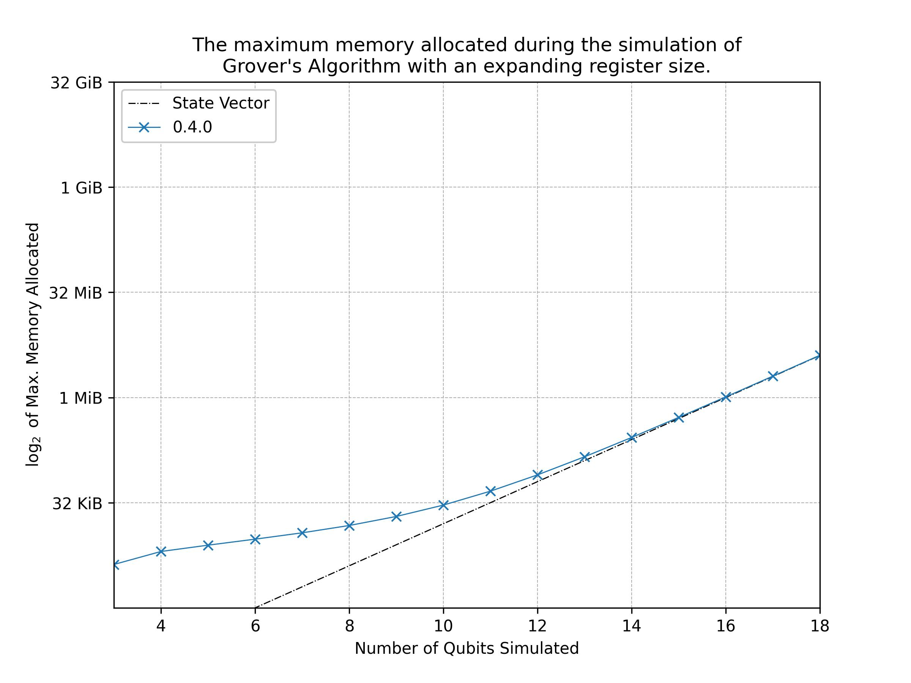

Performance of Quantr 0.4.0
The main optimisation goal for quantr is to minimise the size of the memory allocation required for simulating circuits. Naturally, quantum circuit simulators will have an inherent limitation due to the exponentially increasing size of the complex state vector that grows with the number of qubits. Therefore, this optimisation goal is accomplished by minimising the overhead required to evolve the state vector.
The challenge is made more difficult by developing this library for the
use of personal machines, such as laptops and desktops that may only
have around 8GB of memory. Assuming that the optimum memory allocation
of a n qubit array with f64 complex amplitudes requires 2**(n-6) KiB in Rust, then a primarily calculation states that these target
machines can only ever simulate circuits of up to 28 qubits (requires
4GB of memory for the state vector). Moreover, the circuit simulation
itself should remain tractable.
With the memory requirements being the main concern, it was chosen to develop quantr without the use of any matrix or linear algebra libraries to represent the unitary gates. Instead, the linear mappings of these gates in the computational basis are explicitly given using functions. Using these maps also allows for easier extrapolation to greater qubit circuits than using (sparse) matrices. For instance, with matrices one may use the tensor product to calculate a single qubit gate acting in a greater tenor space. By only using linear mappings, the states of concern within the tensor space can be extracted and mapped directly. More detail of how quantr works without matrices will be given in a future update of this book.
Memory
As of quantr-0.4.0, the minimisation of the overhead required to simulate a state vector has been mainly accomplished.
This was tested by using the cap crate to find the total memory allocated over the simulation of grover's algorithm with an increasing register size. The results of which are shown in the figure below:

The graph shows that quantr is seemingly successful in achieving its memory optimisation goals: the memory allocated for the simulation converges on the memory required to hold the state vector.
The overhead required to run the circuit can be seen for low qubit simulations. Even though this overhead is near double the size of the state vector, the total memory is less than 1 MiB and is deemed small enough to be of little concern to any personal machine.
The simulation of grovers with more than 18 qubits starts to become intractable. There are a number of optimisations that are still planned to be implemented for future releases of 0.4.x, and hopefully in these releases, tests of up to 28 qubits will become tractable.
More rigorous testing would be required to definitively check that quantr has successfully achieved its memory optimisation goals. One test could include randomising the placement of universal gates within a circuit of fixed qubit size, and then record the average memory consumption of these circuits. Then the register could be increased and the average measurement can be taken again. However, I believe the memory required would not differ too much, and the initial testing above gives a good indication to quantr's performance.
The code that produced the data can be found in the appendix.
Speed
The speed of quantr has been untested, and as of quantr-0.4.0, has not been optimised in this respect. Only after further releases will this crate be tested for speed.
Appendix
Code for obtaining the data in the plot found in the memory section:
use std::alloc;
use cap::Cap;
use quantr::{Circuit, Printer, Gate, QuantrError, states::*};
use std::fs::File;
use std::io::prelude::*;
use std::ops::Div;
#[global_allocator]
static ALLOCATOR: Cap<alloc::System> = Cap::new(alloc::System, usize::max_value());
fn cnot_expand(input_state: ProductState) -> Option<SuperPosition> {
let register_size = input_state.num_qubits();
let repeated_one: Vec<Qubit> = vec![Qubit::One; register_size];
let mut repeated_zero: Vec<Qubit> = repeated_one.clone();
repeated_zero[register_size-1] = Qubit::Zero;
if input_state.get_qubits() == repeated_zero {
Some(SuperPosition::from(ProductState::new(repeated_one.as_slice()).unwrap()))
} else if input_state.get_qubits() == repeated_one {
Some(SuperPosition::from(ProductState::new(repeated_zero.as_slice()).unwrap()))
} else {
None
}
}
fn main() -> Result<(), QuantrError>{
ALLOCATOR.set_limit(usize::max_value()).unwrap();
let mut file = File::create("quantr-data-plot.txt").unwrap();
file.write_all("0.4.0\n".as_bytes()).unwrap();
// Grover's algorithm
for n in 3..=18 {
let mut qc: Circuit = Circuit::new(n)?;
let sub_wire_vec: Vec<usize> = Vec::from_iter(0..n-1);
let all_wire_vec: Vec<usize> = Vec::from_iter(0..n);
qc.add_repeating_gate(Gate::H, all_wire_vec.as_slice())?
.add_gate(Gate::CZ(1), 0)?
.add_repeating_gate(Gate::H, all_wire_vec.as_slice())?
.add_repeating_gate(Gate::X, all_wire_vec.as_slice())?
.add_gate(Gate::H, n-1)?
.add_gate(Gate::Custom(cnot_expand, sub_wire_vec.as_slice(), "X".to_string()), n-1)?
.add_gate(Gate::H, n-1)?
.add_repeating_gate(Gate::X, all_wire_vec.as_slice())?
.add_repeating_gate(Gate::H, all_wire_vec.as_slice())?;
let mut printer = Printer::new(&qc);
printer.get_diagram();
qc.toggle_simulation_progress();
qc.simulate();
let memory_used = (ALLOCATOR.allocated() as f32).div(1024f32);
let data_line = format!("{} {}\n", n, memory_used);
file.write_all(data_line.as_bytes()).unwrap();
println!("Printed {}", n);
}
Ok(())
}